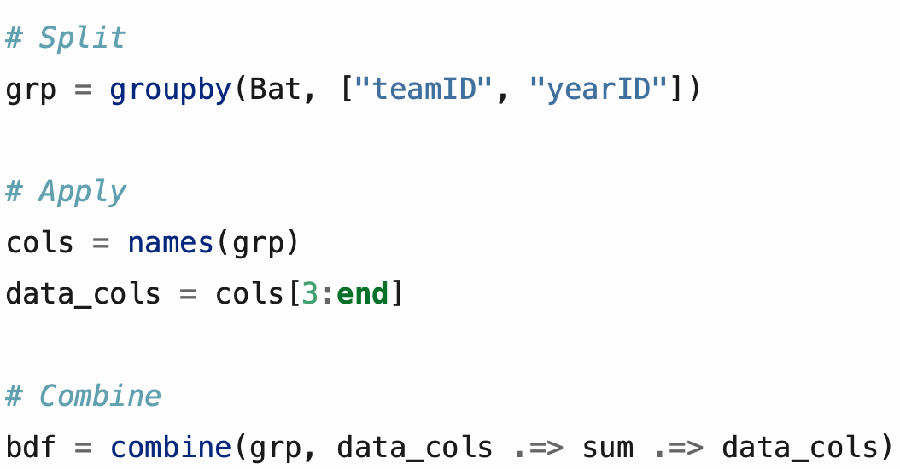
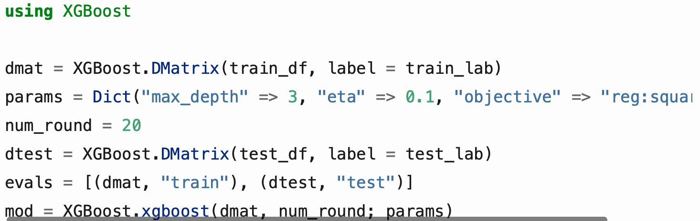
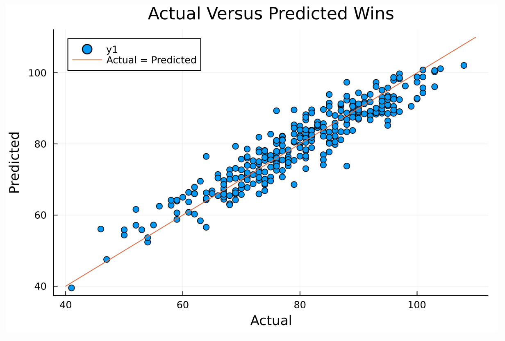

Machine Learning in Julia
One of the most important parts of this project for me was to learn machine learning in Julia. Machine learning allows a model to be trained on features to predict a target. A simple example is having a model predict the age of a tree based on its height and width. To learn the different packages in Julia, I will use MLB team data to predict the number of games that a team will win in a given season. Data used for this part of the project is from Lahman's Baseball Database.
Data Preparation
Lahman's Baseball Database provides both data for player's pitching, fielding, and batting as well as a team's yearly statistics. While the team's yearly statistics provides 25 features for the team, I opted for using the individual player stats to aggregate into full team stats to provide over 40 features for the model to be trained on.
The first part of this process is changing some of the team names to match for each of the datasets so a join can work properly. This process includes defining a dictionary and then mapping those value to the original data. Doing this can be done using Base Julia.
Next, we can start the process of grouping the data to find aggregates so, for each season taken into account, each team's total stats and wins will be present in the data as an individual instance. In Julia, grouping the data based on year and team gives a separate table for each team and year, with each table containing individual player stats for that season. Thus, the method split-apply-combine will be used. The function groupby groups (splits) the data, then in the apply section we grab the columns that we want to find aggregates for, and finaly we sum as we combine the individual datasets into a single dataset again. Applying this method to each the batting, fielding, and pitching datasets then gives us team season stats, which then allows us join the data. Joining the data is done via the leftjoin function, giving us the dataframe we will use for the model.
Trained Model
Train-Test-Split
When training a model, it is important to split the data used in two sets. The first set is for training the model, while the second set is for testing the model. Splitting the model can be done via the randsplit function in the package XGBoost.jl. Before I found this, however, I had created a function to create the splits. This function utilizes the packages LinearAlgebra.jl and MultivariateStats.jl. It also uses one of the built in Julia macros. The macros in Julia transform data much like a function, but can be used to test and evaluate data to be passed to a function. A macro can be called by the @ symbol. In the function, the built-in macro "assert" tests the data to only allow certain values. We use the assert macro to check that the percent to split the dataset is between 0 and 1.
XGBoost
The model that was trained was an "extreme gradient boosted" model, or XGBoost, from the package XGBoost.jl. Training an XGBoost model first requires the features and the target of the model to be fed to the function DMatrix, where the features are inputted as a matrix. Next, we can set the hyperparameters in a dictionary and choose the number of rounds that the model will be trained on. Each of these can then be fed to the model in the xgboost function where the model is defined.
Once the model is trained, it can be used to predict the target for the test data. Root mean squared error is used as the metric for evaluating performance, which comes in at 4.323. This means that, on average, the predicted values are 4.323 games away from the actual values. The plot below demonstrates the accuracy of the model as the dots are centered around the line, which represents predicted values being 100% accuarate.
Feature Importance
Once a model is trained, the function XGBoost.importance() can be used to show which features were the most influential in predicting the target. The drawback of this function is that the function (which was provided to the model as a matrix) is not listed by name. Instead, the features are listed as a number, starting at zero. Alternatively, a feature can be evaluated from the magnitude of their correlation to the target. There were some features, however, that had a decent correlation, but were low in order of importance.
Other Models
Before the XGBoost model was trained and used for prediction, I attempted using a neural network and PCA analysis. A neural network can be trained from the Flux.jl package. To train a neural network, a function needs to be defined from the user for layers to be added and defined. This model was not used because of the low accuracy of the model. PCA analysis can be done from the MultivariateStats package. In order for the PCA to work for the data, the data needs to be transformed. However, there was an issue with the installed version of MultivariateStats where the data would not transform properly. For the sake of time, I decided to forego PCA analysis for the time being.
The full analysis and code can be found at the top